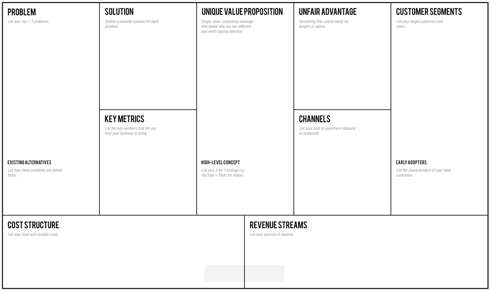

The Data Warehouse Toolkit
去年读了「The Data Warehouse Toolkit」，今年工作需要重读，记录一二。
作者 Ralph Kimball https://en.wikipedia.org/wiki/Ralph_Kimball
第三章开始是实战内容，会展开描述第二章中浓缩的方法论。方便读者吸收知识。书名 Toolkit，内容确实如此。
一些概念
Dimensional Modeling 维度模型
维度模型并不严格按照3NF建模。3NF建模的目标是去重，而维度模型放松了这一要求。
有这么几个好处：
- 表会更少，更易于人理解，特别是对业务人员。如果严格按照3NF建模，一条订单记录，可能会建模成有几十个表的复杂结构了。
- 适当的冗余，减少了关联查询，提高查询性能。
Inmon method 和 Kimball method
数据仓库领域，有两种数据仓库建模方法。Inmon method 和 Kimball method。
Kimball method 也就是这里的维度模型，主张从业务需求出发，倒推出逻辑、物理数据表设计，技术工具的选型。区分事实表、维度表。
Inmon method 严格遵循第三范式 （3NF models）建模，拆分实体，维护严格的表关系，需要精心设计。不区分事实表、维度表。
可以参考这篇：深入对比数据仓库模式：Kimball vs Inmon https://segmentfault.com/a/1190000006255954
star schema 星形模型
在关系型数据库的语境下，维度模型指的是星形模型。星形模型进一步演化是雪花模型。

OLAP cube 数据立方体
在多维度数据库的语境下，维度模型指的是数据立方体。OLAP cube 也是基于逻辑上的星形模型推演出来。
这里，每个小格子代表的是预计算的指标，x、y、z三个轴代表维度。因为预计算，所以查询会很快。

cube字面上指的是立方体。数据分析中，维度不可能只是三维。所以数据立方体的说法，只是一种形象的说法。人无法想象四维吧。
An OLAP cube is a multi-dimensional array of data.[1] Online analytical processing (OLAP)[2] is a computer-based technique of analyzing data to look for insights. The term cube here refers to a multi-dimensional dataset, which is also sometimes called a hypercube if the number of dimensions is greater than 3.
参考 https://en.wikipedia.org/wiki/OLAP_cube
OLAP cube上的常见操作
- slice 切片。

- dice 切成方块。取原cube的sub cube，还是cube。

- drill down 下钻。举例，时间维度上从季度降到月份。也就是查看的数据更细。
- roll up 上卷。举例，浙江、江苏、上海被汇总为江浙沪。也就是聚合。
- pivot 旋转。

fact table 事实表
星形模型中坐落于中心的表。事实表含维度表外键（FK）及指标（Measure）字段。

Measure 指标
比如交易金额。
dimension table 维度表
比如时间维度表、产品维度表。维度，可以理解为指标产生时候的上下文信息。
有了上下文信息，指标的描述更有意义。

数据分析框架
2019-12-30
- 新增维度：根据客户注册时间按月分段（同期群分析）。时间维度。

- 这个“黄金策”就是一个多维数据分析的场景，这是一个典型的BI应用。指标相同，但是维度组合不同。维度1：where 30 <= age <= 36 and card_num = 1，维度2：where 30 <= age <= 36 and card_num > 1，指标：客单价，购物偏好。最大的问题，应该是怎么够快？数据仓库能够在3秒内得出分析结果么？其次，数据可视化了。

参考：
- 华尔街日报是这样做数据可视化的（1） https://mp.weixin.qq.com/s?__biz=MjM5NjcxMzIwMQ==&mid=502377582&idx=1&sn=90311b1eb3d013e39d6b4b099f179ad8&scene=1&srcid=0830tJVuFLsyG3xUkIQ6Zf6h#rd
精益数据分析
2019-12-30
数据分析的终极目标，就是指导企业如何生存与发展。
本书与创业有关。

AARRR模型。


「数据仓库结构设计与实施」第二章
2019-11-06
-
金字塔模型，多层叠加的形式的系统：OLTP数据库中的源数据->ETL程序导入到数据仓库基础层（事实、维度）-> 大量针对事实维度表的总计等操作形成的新层面 -> BI系统使用
-
金字塔结构从底层向上，体现出强大的收敛与聚合功能，层面越高，越能高度地概括更丰富、更有意义的信息；层面越低，容积越大，含有的数据量就越大，信息就越具体、详细。
-
金字塔结构，漏斗模型，层级递进的思想是不变的
-
数据仓库的理论基础，就是分层，还有元数据管理。OLAP与多维数据模型（星星模型）
-
元数据是说明数据的数据，如在数据库中的数据字典，或者数据表和数据表之间的关系。（元数据管理挺烦心的，有抵触情绪）
-
想到，既然是以数据能力为产品出发点，那么就需要足够丰富的数据采集工具。丰富的采集工具，采集大量的数据，然后使用大数据技术维护一个数据仓库。
-
星型结构是非范式的、以查询为中心的模型，这种模型的最大优点是能够提供所谓的星连接，即通过一步连接就可以获取大部分所需要的信息，并很快得到输出结果
-
作为用户的主要用途的事实表，反映了业务的主要指标，如销售量、销售额、成本、某种活动的计数、用户在网上的点击数、用户在网上的下载量，同时也包括各种与维表链接的键。（比如，用户的点击、浏览行为，就是事实表的内容）
-
用户点击、访问行为为事实表（可以统计PV、UV等度量。事实表是基于一件事实，一个目的。），后端埋点的用户授权的个人信息作为维度表（可以分析基于某个用户社会属性维度的度量，也就是维度分析吧）。
-
时间维中，它以时、日、周、月、季、年等构成层次级，联机分析处理和报表可按上述层次进行汇总，如周报、月报、季报、年报。（对时间这个字段的认识，理论认识上有先天不足。学习了。）

- 金字塔模型。
Chapter 3 Retail Sales
2019-12-03
- 定义好粒度，Grain 粒度：How do you describe a single row in the fact table? 举例，一次交易（订单粒度），交易中的一次商品扫描（商品订单粒度）。
- 确定维度。How do business people describe the data resulting from the business process measurement events? 维度是一个事实的上下文。
- Facts that clearly belong to a different grain must be in a separate fact table. 不同粒度的数据，写入独立的事实表。
- 数据驱动与业务驱动要结合。
- 了解客户，客户分层，客户标签化（用户画像），什么样的促销适合什么样的客户（适合指的是能让决策者利益最大化）
- 收集的数据，最好是越细越全越好，未来需求无法预测。Tackling data at its lowest atomic grain.
- non-additive metrics 比如净利润的百分比、比例，没法累加。单价也无法累加，温度也无法累加。
- additive metrics 比如销售额。
- Drilling down（下钻） in a dimensional model is nothing more than adding row header attributes from the dimension tables. Drilling up（上钻） is removing row headers. up是抽象，down是细节，多加维度

数据相关书籍
- 「决战大数据」车品觉，经历 eBay、阿里
- 「精益数据分析」指导创业中的数据思维，重新认识了很多指标